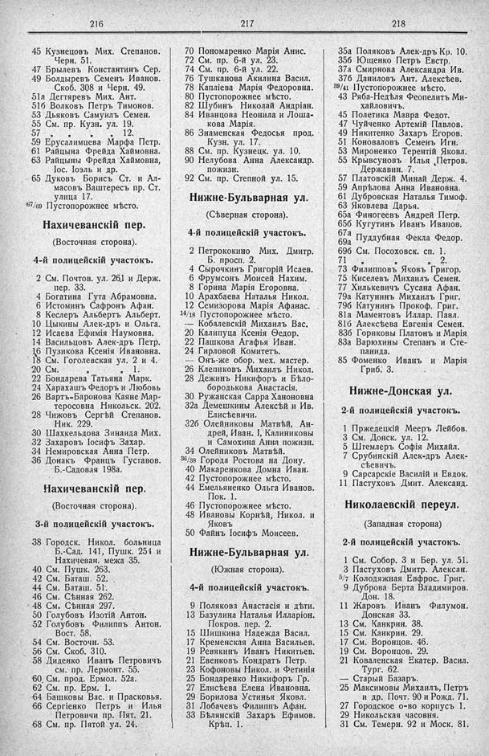

Лист источника 204
Скан

Распознанный текст
216
45 Кузнецовъ Мих. Степанов.
Черн. 51.
47 Брылевъ Константинъ Сер.
49 Болдыревъ Семенъ Иванов.
Скоб. 308 и Черн. 49.
51а Дегтяревъ Мих. Ант.
51б Волковъ Петръ Тимонов.
53 Дьяковъ Самуилъ Семен.
55 См. пр. Кузн. ул. 19.
57 „ „ „ 12.
59 Ерусалимцева Марфа Петр.
61 Райцына Фрейда Хаймовна.
63 Райцыны Фрейда Хаймовна,
Іос. Іоэль и др.
65 Дуковъ Борисъ Ст. и Ал-
масовъ Ваштересъ пр. Ст.
улица 17.
467/69 Пустопорожнее мѣсто.
Нахичеванскій пер.
(Восточная сторона).
4-й полицейскій участокъ.
2 См. Почтов. ул. 261 и Держ.
пер. 33.
4 Богатина Гута Абрамовна.
6 Истоминъ Сафронъ Афан.
8 Кеслеръ Альбертъ Альберт.
10 Цыкины Алек-дръ и Ольга.
12 Исаева Ефимія Наумовна.
14 Васильцовъ Алек-дръ Петр.
16 Пузикова Ксенія Ивановна.
18 См. Гоголевская ул. 2 и 4.
20 См. „ „ 1.
22 Бондарева Татьяна Марк.
24 Харахашъ Федоръ и Любовь
26 Вартъ-Баронова Каяне Мар-
теросовна Никольск. 202.
28 Чижовъ Сергѣй Степанов.
Ник. 229.
30 Шахкельдова Зинаида Мих.
32 Захаровъ Іосифъ Захар.
34 Немировская Анна Петр.
36 Донакъ Францъ Густавов.
Б.-Садовая 198а.
Нахичеванскій пер.
(Восточная сторона).
3-й полицейскій участокъ.
38 Городск. Никол. больница
Б.-Сад. 141, Пушк. 254 и
Нахичеван. межа 35.
40 См. Пушк. 263.
42 См. Баташ. 52.
44 См. Баташ. 51.
46 См. Сѣнная 262.
48 См. Сѣнная 297.
50 Голубовъ Изотій Антон.
52 Голубовъ Филиппъ Антон.
Вост. 58.
54 См. Восточн. 53.
56 См. Скоб. 310.
58 Диденко Иванъ Петровичъ
см. пр. Лермонт. 55.
60 См. прод. Ермол. 52а.
62 См. пр. Ерм. 1.
64 Башковы Вас. и Прасковья.
66 Сергіенко Петръ и Илья
Петровичи пр. Пят. 21.
68 См. пр. Пятой ул. 24.
217
70 Пономаренко Марія Анис.
72 См. пр. 6-й ул. 23.
74 См. пр. 6-й ул. 22.
76 Тушканова Акилина Васил.
78 Капліева Марія Федоровна.
80 Пустопорожнее мѣсто.
82 Шубинъ Николай Андріан.
84 Иванцова Неонила и Лоша-
кова Марія.
86 Знаменская Федосья прод.
Кузн. ул. 17.
88 См. пр. Кузнецк. ул. 10.
90 Нелубова Анна Александр.
пожизн.
92 См. пр. Степной ул. 15.
Нижне-Бульварная ул.
(Сѣверная сторона).
4-й полицейскій участокъ.
2 Петрококино Мих. Дмитр.
Б. просп. 2.
4 Сырочкинъ Григорій Исаев.
6 Фрумсонъ Моисей Нахим.
8 Горина Марія Егоровна.
10 Арахбаева Наталья Никол.
12 Семизорова Марія Афанас.
14/18 Пустопорожнее мѣсто.
— Кобалевскій Михаилъ Вас.
20 Калипуца Ксенія Ѳеодор.
22 Пашкова Агафья Иван.
24 Гирловой Комитетъ.
— Онъ-же обор. мех. мастер.
26 Клепиковъ Михаилъ Никол.
28 Дежинъ Никифоръ и Бѣло-
бородькова Анастасія.
30 Ружанская Сарра Ханоновна
32а Демешкины Алексѣй и Ив.
Елисѣевичи.
32б Олейниковы Матвѣй, Ан-
дрей, Иван. I, Калиниковы
и Самохина Анна пожизн.
34 Олейниковъ Матвѣй.
36/38 Города Ростова на Дону.
40 Макаренкова Домна Иван.
42 Пустопорожнее мѣсто.
44 Емельяненко Ольга Иванов.
Пок. 1.
46 Пустопорожнее мѣсто.
48 Ивановы Корнѣй, Никол. и
Яковъ
50 Файнъ Іосифъ Моисеев.
Нижне-Бульварная ул.
(Южная сторона).
4-й полицейскій участокъ.
9 Полякова Анастасія и дѣти.
13 Базулина Наталья Илларіон.
Покров. пер. 2.
15 Шишкина Надежда Васил.
17 Кременская Анна Васильев.
19 Ревякинъ Иванъ Никитьев.
21 Евенковъ Кондратъ Петр.
23 Кофоновы Никол. и Фетинія
25 Бондаренко Никифоръ Гр.
27 Елисѣева Елена Ивановна.
29 Борилова Устинья Яковл.
31 Лобачевъ Филиппъ Афан.
33 Бѣлянскій Захаръ Ефимов.
Крѣп. 1.
218
35а Поляковъ Алек-дръ Кр. 10.
35б Ющенко Петръ Евстр.
37а Смирнова Александра Ив.
37б Даниловъ Ант. Алексѣев.
39/41 Пустопорожнее мѣсто.
43 Ряба-Недѣля Феопелитъ Ми-
хайловичъ.
45 Полетика Мавра Федот.
47 Чуйченко Артемій Павлов.
49 Никитенко Захаръ Егоров.
51 Коноваловъ Семенъ Игн.
53 Мироненко Терентій Яковл.
55 Крывсуновъ Илья Петров.
Державин. 7.
57 Платовскій Минай Держ. 4.
59 Апрѣлова Анна Ивановна.
61 Дубровская Наталья Тимоф.
63 Яковлева Дарья.
65а Финогеевъ Андрей Петр.
65б Кугутинъ Иванъ Иванов.
67а Пуддубная Фекла Федор.
69а
69б См. Посоховск. сп. 1.
71 „ „ „ 2.
73 Филипповъ Яковъ Григор.
75 Киселевъ Михаилъ Семен.
77 Хилькевичъ Сусана Афан.
79а Катунинъ Михаилъ Григ.
79б Катунинъ Прокоф. Григ.
81а Маментовъ Иллар. Павл.
81б Алексѣева Евгенія Семен.
83б Гориковы Платонъ и Марія
83а Варюхины Степанъ и Сте-
панида.
85 Фоменко Иванъ и Марія
Гриб. 3.
Нижне-Донская ул.
2-й полицейскій участокъ.
1 Пржедецкій Мееръ Лейбов.
3 См. Донск. ул. 12.
5 Штемлеръ Софія Михайл.
7 Срубинскій Алек-дръ Алек-
сѣевичъ.
9 Сарсарскіе Василій и Евдок.
11 Пастуховъ Дмит. Александ.
Николаевскій переул.
(Западная сторона)
2-й полицейскій участокъ.
1 См. Собор. 3 и Бер. ул. 51.
3 Пастуховъ Дмитр. Алексан.
5/7 Колодяжная Евфрос. Григ.
9 Дуброва Берта Владимиров.
Дон. 18.
11 Жаровъ Иванъ Филумон.
Донская 33.
13 См. Канкрин. 38.
15 См. Канкрин. 29.
17 См. Воронцов. 46.
19 См. Воронцов. 29.
21 Коваленская Екатер. Васил.
Тург. 62.
— Старый Базаръ.
25 Максимовы Михаилъ, Петръ
и др. Почт. 90 и Рожд. 71.
27 Городское о-во корпусъ 1.
29 Никольская часовня.
31 См. Темерн. 92 и Моск. 81.